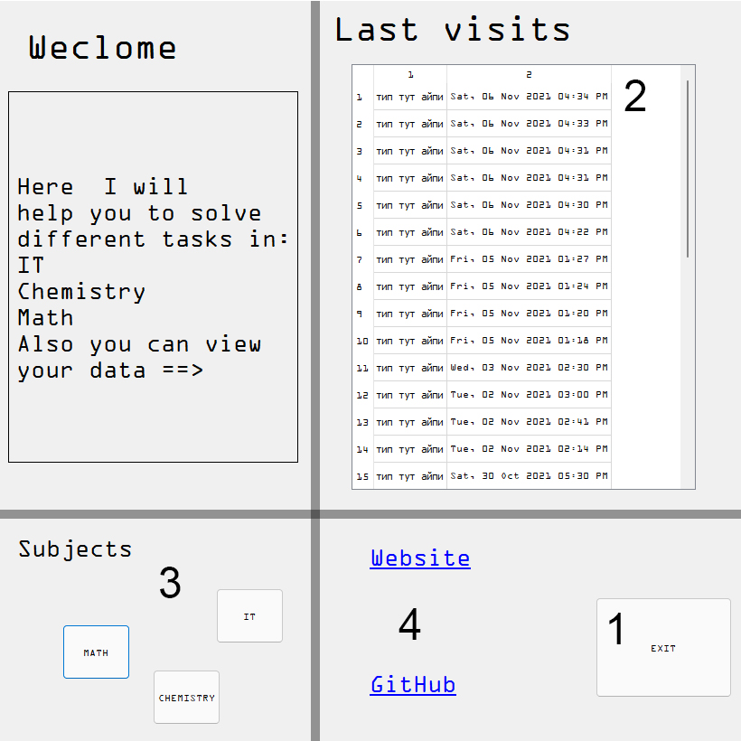

Nearly full theme customisation
There is NO customisation cause there is qt and its really hard to customize so I decided not to do it.
Randomisator
There is no randomisator cause idea of the app is to create helper for school and in school u don't need ot generate random numbers so I removed them
Math IT and Chemistry
In Math I added graphics builder and button that will do os.system('calc') and it will open standart windows calc)
In IT and chemistry there r no changes
Updates
I don't think I will update this app cause Qt in comparison with flutter is nothing cause u can use flutter like everywhere and for
PyQt u need pc and some Python libraries(idk how to convert my app to .exe)
Russian presentation:
ТЗ:
Создать небольшой проект на pyqt, в котором будут полезные функции по таким предметам как:
Химия
Алгебра
Информатика
Будет 4 экрана:
Навигационная панель со всеми экранами и базой данных, в которой будут отображаться айпишники тех, кто заходил в приложение и время захода(начальный экран)
С химическими фичами(уравнение реакций и цепочка реакций, при создании можно использовать парсер)
С алгеброй(основные фичи по типу НОД, НОК, среднее арифметическое; построение графика; решалками нескольких типов уравнений)
С информатикой(в основном операции с переводами в разные системы счисления и сами переводы)
По возможности все компилируется в .exe файл(не работает ввиду того, что на гит тупо нелья большие файлы заливать)
Пояснительная записка:
При запуске приложение мы видим главный экран:

1 - Кнопка выхода
2 - Таблица с айпишниками и датами входа в приложение(ф - ция добавления срабатывает каждый раз, когда пользователь открывает программу)
3 - Сектор с кнопками, открывающими соответствующие экраны
4 - ссылки, сверху - на этот сайт, снизу - на репозиторию на гитхабе
Теперь про сами экраны:
Экран с информатикой:
Посередине написана глубогомысленная цитата на языке JavaScript
Рассмотрим то, что выше цитаты:
В поле "Number to convert:" вносится число, а в поле base of "converted number:" - система счисления этого числа
В поле "Base to convert:" вносится система счисления, в которую Вы хотите перевести число
При нажатии на кнопку "Solve" в поле "Result" появится Ваше число, но уже в заданной системе счисления
Теперь посмотрим вниз:
B поля "Number 1" и "Number 2" вводятся числа и в полях "System of number 1" и "System of number 2" воодятся системы счисления соответствующих чисел
В поле "operation" вводится операция, которую Вы хотите совершить с этими числами
В поле "system of result" выбирается система счисления для результата операции
При нажатии на кнопку "Solve" выведется результат заданной операции в заданной системе счисления
Экран с химией:
Тут все весьма просто:
Сверху текстовые поля, в которые вводятся элементы, при нажатии на кнопку в поле "Result" появится
правильный ответ на уравнение 1 элемент + 2 элемент = ?
Все уравнения записываются в текстовик, поэтому если Вам недо будет что-то заново решить, можно посмотреть там
Чуть ниже располагается поле ввода, куда нужно ввести цепочку превращений, по нажатии на кнопку, программа выдаст превращения, которые
смогла найти
Цепочки с результатами записываются в базу данных
Также есть приложенная таблица менделеева, которую не очень хорошо видно, поэтому можно перейти по ссылке и посмотреть ее в увеличенном виде
Для экономии времени и нервных клеток, все две функции сделаны с помощью технологии веб парсинга(то бишь прога подключается к браузеру и
крадет определенные данные с сайта), поэтому скорее всего не будет работать без подключения к интернету
Экран с математикой:
Дисклеймер: тут все работает неплохо, но если значения в пределах разумного, с огромными может крашится и выдвавать ошибки, где это возможно,
я постарался ограничить это, но получилось не везде. И еще, поля, для которых указанно, что ввод должен быть простой, он действительно должен быть простой, иначе могут быть неверные данные(например, если строить гр-к x ** 0.5)
Тут все также предельно просто, сверху располагаются поля, котоыре решают уравнения, в первое нужно вводить наипростейшее уравнение
с неизвестной - x(это важно), в остальные - только коэфиценты a, b и с
Ниже находется текстовое поле, в которое можно ввести простою функцию(парабола/гипербола и т п) и при нажатии на кнопку откроется диалог с графиком
График строется с помощью модуля mathplotlib, этот модуль довольно популярен и реализация построения графиков там довольно прикольная, поэтому
вставил именно его
Ниже справа находятся умная цитата, а еще ниже - кнопка, которая прописывает в консоль: "calc" и отркывает калькулятор
Слева же находятся поля вода с простейшими ф-циями, тут интерфейс довольно понятный, в объяснениях не нуждается
Интерфейс
у экранов может меняться, могут быть добавленны новые фичи, но если я не упомянул об это сдесь, значит фича слишком простая, чтоб ее разбирать
Презентация:
Немного о истории создания:
В 8 классе у меня начался такой предмет как химия, не сказал бы, что очень сложный, но довольно неприятный и надо много учить,
тогда я уже увлекался программированием и однажды зимой я подумал, а можно ли попробовать сделать что-то вроде автоматического решателя химии?
Тогда основным видом заданий были цепочки превращений и обычные уравнения химических реакций
Оказалось, что да, можно, первой версией этой программы было что-то волшебное, программа, в которую нужно было вбить уравнения реакции, через модуль selenium открывала браузер, вбивала на сайте нужные данные и делала скриншоты страниц, можно было уйти пить чай, прийти, и вот уже все уравнения решены, осталось только переписать, это довольно сильно сокращало время деланья домашки(просто с гуглом ~10 минут, так - ~6)
Затем программа улучшилась и стала работать через модуль requests и вместо скриншотов данные выводились в консоль или записывались в текстовик, но уже не нужно было сидеть с открытым браузером, время не уменьшилось, но стало красивее
Но и на этом я не остановился, этим летом я изучил основы ЯП dart и его фреймворка Flutter для создания кросплатформенных приложений, тогда я подумал, что было бы прикольно, если б у меня в телефоне была некая шпаргалка по всем предметам, которую можно довольно быстро открыть и, если понадобится, сделать то, о чем не принято говорить в современном обществе
Тогда я перенес мою химическую прогу на другой язык и она обросла функциями из других предметов, таких как математика и информатика
Это было довольно удобно и я мог быстро считать что понадобится, не заходя в интернет
Это довольно удобно, и когда речь зашла про проект на десктопы, первое, что пришло мне в голову - переделать приложение(хотя его можно было просто скомпилировать под комп).
Теперь небольшие ворпосы, которые у кого-то могли возникнуть:
Почему же тогда не взять и просто скомпилировать само приложение в exe файл и не парится с созданием чего-то на PyQt?
Я могу сказать несколько причин, почему же был смысл делать это все на PyQt:
1. Dart раз в 5 сложнее питона
2. В Qt гораздо удобнее позиционировать элементы, чем на Flutter'е
3. Проект должен быть на PyQt
4. В питоне гораздо легче добавить какую-то фичу, чем на дарте
5. Flutter больше рассчитан на взаимодействие с телефонами, нежели с компами, с питоном все наоборот
Зачем нужно приложение, если есть гугл и можно все нагуглить?
1. Функции из разделов математики и информатики работают без интернета
2. На первых страницах гугла лично мне не удалось найти калькулятора, который решил бы цепочку преварщений, были только те, которые решали бы поотдельности ее звенья
3. К функции решения простых уравнений подключен текстовик, в который можно заглянуть в офлайн режиме и, если вы решали какое-то уравнение, то спокойно его там найдете